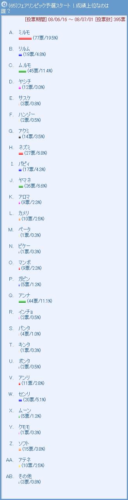
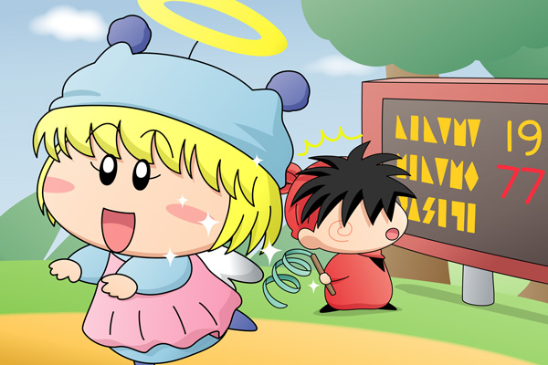

2008年の北京オリンピックに合わせて、ムルモ屋本舗でもスペシャル企画を行いました。その名も『ムルモ屋本舗版 フェアリンピック』！ 大げさですが、いつもの投票のスペシャル版です(^^;。皆さんと盛り上がった１ヶ月間を記事として残したいと思います。
まずは予選、こちらは本当にいつもの投票形式です。投票が終わるまでは予選通過条件はお伝えしませんでしたが、投票数の上位10妖精が予選通過となります。［コメント一覧］
| １位 | 77票 | ミルモ |
| ２位 | 45票 | ムルモ |
| ３位 | 44票 | アンナ |
| ４位 | 27票 | ネズミ |
| ５位 | 26票 | ヤマネ |
| ６位 | 20票 | センリ |
| ７位 | 19票 | リルム |
| ８位 | 17票 | パピィ |
| ９位 | 15票 | ソフト |
| １０位 | 14票 | アクミ |
| １１位 | 12票 | ヤシチ |
| １２位 | 11票 | アンリ |
| １３位 | 10票 | カメリ |
| アテネ | ||
| １５位 | 9票 | マンボ |
| アロマ | ||
| １７位 | 5票 | ガビン |
| ムーン | ||
| １９位 | 4票 | パンタ |
| ２０位 | 3票 | サスケ |
| ２１位 | 2票 | ハンゾー |
| インチョ | ||
| ポンタ | ||
| ２４位 | 1票 | ペータ |
| ビケー | ||
| キンタ | ||
| クモモ |
やはりミルモ・ムルモの王子兄弟が強かった！３位以降はムルモ屋本舗でも人気のある妖精がずらっと並んでいますね。そしてアニメでは好成績を残したヤシチがまさかの予選落ち、オリンピック妖精のアテネもあと一歩届かずでした。フェアリンピック本戦では予選通過10妖精でのバトルが行われます。

ミルモ＆ヤシチ(6)

アニメでは予選は３本選手の『ほっぺた相撲』でしたが、ムルモ屋本舗版ではどうかと言うと・・・えっと、たった今考えました(汗)。
『妖精新体操（自由形）』
フリースタイルで技術点と芸術点を競う競技です。ミルモが１位になりそうな競技となると、やっぱり新体操でしょうか。もちろんミルモ子になって乙女の気持ちを存分に表現します。他の予選通過の妖精がどんな新体操を行ったのかは皆さんのご想像にお任せします。特にネズミとアクミがなかなか想像できない・・・(^^;。
(2)へ続く
(2008/8/23)